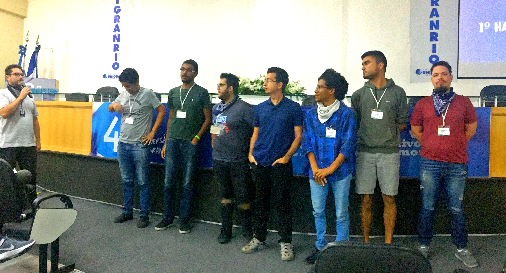

A Universidade do Grande Rio - UNIGRANRIO, lança o 2° Hackathon Unigranrio - Unigranrio. Trata-se de uma maratona de programação multidisciplinar e colaborativa,
onde grupos competem entre si desenvolvendo projetos que possam fornecer melhorias
significativas ou solucionem problemas pertinentes ao tema proposto, por meio da aplicação
eficiente e inteligente das tendências tecnológicas disponíveis, em um tempo de trabalho
limitado de 24 horas.
Disposições Gerais
Participação
Qualquer pessoa acima de 18 anos pode participar, desde que alocada em uma das
categorias dispostas neste regulamento. No entanto, os participantes devem estar
atentos às seguintes concessões:
Permitido: será permitido a utilização de frameworks de
desenvolvimento, simuladores ou ambientes virtuais de prototipagem, que facilitam
o processo de trabalho.
Não permitido os participantes não podem concorrer com
soluções que já estejam em fase avançada de desenvolvimento e, da mesma forma,
não podem estar prototipadas em qualquer nível.
Categorias
As categorias para participação são as seguintes:
Categoria
Descrição
Alunos de Graduação Unigranrio
Alunos regularmente matriculado em cursos de Graduação da Unigranrio.
Alunos de graduação visitantes
Alunos de outras instituições de ensino de nível superior regularmente matriculados.
Profissionais
Pessoas interessadas em participar que já estão inseridas no mercado de trabalho
ou cursando pós-graduação relacionada à área de tecnologia.
Etapas e Calendário
Etapas
Atividade
Inicio
Fim
Etapas de Inscrição Etapa 1
Etapa 2
Divulgação do tema
Cadastro de equipe e sua ideia de projeto
08/04/2019
08/04/2019
08/04/2019
21/04/2019
Etapa de seleção Etapa 3
Seleção das ideias
Divulgação das equipes e ideias selecionadas
22/04/2019
24/04/2019
23/04/2019
24/04/2019
Etapa presencial Etapa 4
Credenciamento
Desenvolvimento e prototipagem da solução
26/04/2019 às 17:30h
26/04/2019 às 19:30h
26/04/2019 às 17:30h
27/04/2019 às 20h
As estapas de 1 e 2 ocorrerão de forma online; a etapa 3 trata-se de uma etapa eliminatória
; e a etapa 4, que é a etapa presencial com início no dia 26/04/2019, trata-se de uma etapa
classificatória.
Etapa de Inscrição - Online
Formulário de Inscrição
As equipes deverão cadastrar suas idéias através do site http://algum.bit.ly/clicou_regulamento. Após a leitura do regulamento
, deverão preencher o formulário disponível, atendendo aos campos obrigatórios.
1. Categoria
A categoria a qual a equipe se encaixa.
Campo Obrigatório.
2. Nome da Equipe
O nome da equipe. (Max. de 30 caracteres)
Campo Obrigatório.
3. Idéia de Projeto
Descreva brevemente, mas com clareza, a idéia de projeto da equipe. (Max. de 300 caracteres)
Campo Obrigatório.
4. Qual problema você está solucionando?
Qual problema a equipe propõe solucionar, dentro do tema proposto. (Max. de 140 caracteres)
Campo Obrigatório.
5. Membros da equipe
Quem são as pessoas que compõem a equipe. São obrigatórios, pelo menos, 3 (três) membros em cada equipe e, no máximo, 5 (cinco) membros.
Campo Obrigatório.
Link para Inscrição
Para prosseguir com a inscrição, basta seguir o link:
Serão selecionadas até 15 (quinze) propostas para a etapa presencial conforme os critérios de seleção
estabelecidos neste regulamento.
Os projetos selecionados serão divulgados através do link http://algum.bit.ly/clicou_regulamento Os
alunos devem estar atentos aos canais de comunicação da Unigranrio para eventuais informações importantes.
Critérios de Seleção
Serão avaliadas apenas os projetos que preencheram todos os campos obrigatórios do formulário
de inscrição. Assim, para esta etapa serão levados em conta os critérios:
Aderência
Nesse critério será avaliado se o projeto apresentado é aderente à temática do evento.
Relevância
O grau de magnitude do problema apresentado, bem como de impacto da solução proposta.
Etapa Presencial - Classificatória
Agenda de Trabalho
Teremos a seguinte programação de trabalho, com início às 17h30min do dia 23/11/2018 e término
às 20h do dia 24/11/2018:
Dia
Horario
Atividade
26/04/2019
17h30min 19h às 19h30min 19h30min às 20h 20h
Credenciamento Abertura Talk (tema a definir) Inicio do desenvolvimento das soluções
26/04/2019
12h 18h 18h15min 19h30min às 20h
Almoço Término do desenvolvimento das soluções Apresentação dos projetos Premiação e Encerramento
Haverá alimentação disponível durante o evento com café, água e suco para os participantes.
Uso de Equipamentos
Atenção:durante a etapa presencial, os participantes do evento devem trazer
seus próprios equipamentos e dispositivos para desenvolver e prototipar. Será utilizado a política
Bring you own device (BYOD) - (do inglês: traga seu próprio dispositivo - laptops, tablets, smartphones,
placas, breadboards, cabos e etc). Incluindo extensões e adaptadores (se necessário).
Ambiente de Trabalho
A unigranrio irá fornecer o espaço confortável para os participantes, incluindo mesas, cadeiras,
energia elétrica, internet de qualidade e papel A3. Será fornecido também lanche e estacionamento (xx vagas).
Apresentação dos Projetos
A apresentação dos projetos para a banca avaliadora será baseada no modelo pitch
(uma apresentação cativante, rápida e sucinta). É ideal que o grupo mostre a importância e
viabilidade da solução proposta. O tempo destinado para a apresentação do pitch será de 5
(cinco) minutos por grupo. A banca avaliadora terá 2 (dois) minutos para realizar perguntas
e o grupo terá 2 (dois) minutos para responder.

Critérios de Avaliação
A banca avaliadora será composta por convidados de renome da região, ligados à inovação,
bem como forte atuação no mercado tecnológico. Estes avaliadores serão divulgados no site
do evento.
Os avaliadores julgarão os projetos em função dos seguintes critérios classificatórios:
Qualidade da Solução: Serão avaliadas as características gerais da solução
proposta e qualidade do protótipo desenvolvido.
Proposta de Valor: Será avaliado se os beneficios da solução estão bem
definidos e são relevantes para os atores envolvidos.
Mercado: Será avaliado se a proposta apresenta diferenciais relevantes, com
potencial de inserção no mercado.
Atenção: caso se identifique que algum projeto foi desenvolvido, bem como prototipado
, fora da etapa presencial, a equipe será desclassificada e nãio poderá concorrer à premiação.
Recomendações e Observações
Recomendamos fortemente que as equipes sejam compostas por alunos de diversas áreas.
Por exemplo, com alunos programadores, designers, de negócios e da área da saúde.
Os participantes autorizam a Unigranrio, desde já, no uso gratuito de seus nomes,
imagem e suas fotografias em qualquer tipo de mídia, Internet e peças promocionais sem
qualquer tipo de compensação adicional.
Os participantes do Hackathon deverão apresentar à comissão organizadora o Termo de
Cessão de Direitos Autorais. Modelos podem ser encontrados no site http://algum.bit.ly/clicou_regulamento. Adicionalmente, os participantes do Hackathon se comprometem em respeitar Direitos Autorais de terceiros. Os participantes, e nunca os organizadores, serão responsáveis por qualquer violação de direitos autorais e/ou intelectuais de terceiros.
Considerações Finais
Toda e qualquer situação não prevista, bem como eventuais casos omissos, serão decididos
exclusivamente pela Unigranrio.
Estas regras poderão ser alteradas e/ou suspensa e/ou cancelada sem aviso prévio e/ou
justificativa formalizada por motivo de força maior e/ou por qualquer outro motivo que
esteja fora do controle da Unigranrio e que comprometa a sua realização, de forma a impedir
e/ou modificar substancialmente a sua condução como originalmente planejada.
A alteração das regras e/ou suspensão ou o cancelamento serão divulgados pela Unigranrio
através do Facebook e site do evento, de forma que o participante deve acessar periodicamente
estas plataformas, a fim de tomar conhecimento de eventuais alterações.